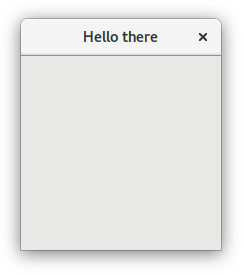

チュートリアル
このページでは、単純なプロジェクトに対しての Meson ビルド定義（Meson build definition）を新規に生成するところから始めます。そして外部の依存モジュールを利用するように拡張します。この様子から、プロジェクトの統合が簡単にできることがわかります。
単純な例から
最も基本的なプログラムから始めます。いつもの hello プログラムです。まずはソースコードを記述した main.c
ファイルを生成します。これは以下のようなものです。
#include<stdio.h>
int main(int argc, char **argv) {
printf("Hello there.\n");
return 0;
}
そして Meson ビルド定義を作り上げて、同一ディレクトリ内に meson.build
というファイルとして生成します。その内容は以下のとおりです。
project('tutorial', 'c')
executable('demo', 'main.c')
記述はたったこれだけです。アプリケーションをビルドする準備は、これでできてしまいました。まずはビルドのための初期化が必要なので、ソースディレクトリに移動して、以下のコマンドを実行します。
$ meson builddir
ビルドディレクトリが 1 つ生成されて、コンパイラーの出力はここに収められます。Meson は他のビルドシステムとは異なり、ソースディレクトリ内でのビルドは許可されません。常にビルドディレクトリを用意することが必要です。通常は慣例として、ソースディレクトリ最上位のサブディレクトリとします。
Meson を実行すると、以下のように出力されます。
The Meson build system
version: 0.13.0-research
Source dir: /home/jpakkane/mesontutorial
Build dir: /home/jpakkane/mesontutorial/builddir
Build type: native build
Project name is "tutorial".
Using native c compiler "ccache cc". (gcc 4.8.2)
Creating build target "demo" with 1 files.
これによりプログラムのビルドができたことになります。
$ cd builddir
$ ninja
これを行ったら、生成されたバイナリーを以下のように実行します。
$ ./demo
期待どおりに出力が得られます。
Hello there.
依存モジュールの追加
テキストを出力するだけなのは、なんとも古いやり方です。ここからはこのプログラムを、グラフィックウィンドウを用いたものに作り変えます。ここでは GTK+ ウィジェットツールキットを利用します。まずはメインプログラムが GTK+ を利用するように修正します。新たなプログラムは以下のようになります。
#include<gtk/gtk.h>
int main(int argc, char **argv) {
GtkWidget *win;
gtk_init(&argc, &argv);
win = gtk_window_new(GTK_WINDOW_TOPLEVEL);
gtk_window_set_title(GTK_WINDOW(win), "Hello there");
g_signal_connect(win, "destroy", G_CALLBACK(gtk_main_quit), NULL);
gtk_widget_show(win);
gtk_main();
}
そして Meson ビルド定義を編集します。GTK+ ライブラリを検索して利用できるように指示します。
project('tutorial', 'c')
gtkdep = dependency('gtk+-3.0')
executable('demo', 'main.c', dependencies : gtkdep)
ビルドができるようになりました。念のため説明しておきますが、ビルドディレクトリは再度生成する必要もなく、特別なコマンドなどを実行する必要もありません。先ほどとまったく同じコマンドを実行するだけです。ビルド方法のどこも変わっていないかのように、ただビルドするだけです。
$ ninja
初めにビルドディレクトリを生成しておけば、meson コマンドを実行する必要はなくなり、その後は ninja を実行します。Meson
はビルド定義に加えられた変更を自動検知して、すべてを考慮した動作を行います。したがってユーザーは何も気にする必要はありません。上のコマンド実行からは、以下の出力が得られます。
[1/1] Regenerating build files
The Meson build system
version: 0.13.0-research
Source dir: /home/jpakkane/mesontutorial
Build dir: /home/jpakkane/mesontutorial/builddir
Build type: native build
Project name is "tutorial".
Using native c compiler "ccache cc". (gcc 4.8.2)
Found pkg-config version 0.26.
Dependency gtk+-3.0 found: YES
Creating build target "demo" with 1 files.
[1/2] Compiling c object demo.dir/main.c.o
[2/2] Linking target demo
この出力から Meson がビルド定義の変更を検知して自動的に再ビルドを行っている様子がわかります。実行プログラムは以下のようにして実行します。
$ ./demo
プログラム実行によって、以下のような GUI アプリケーションが表示されます。

The results of the search are